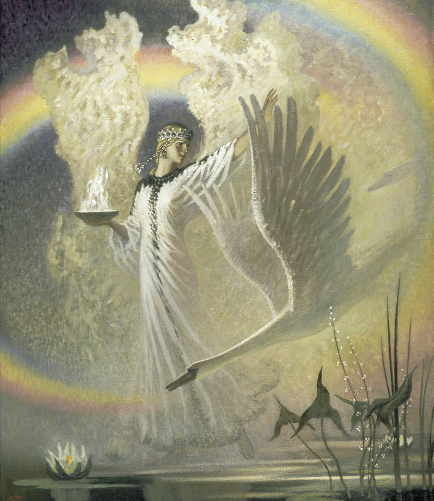
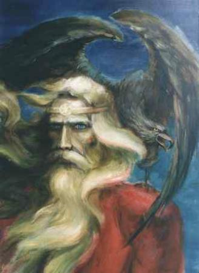
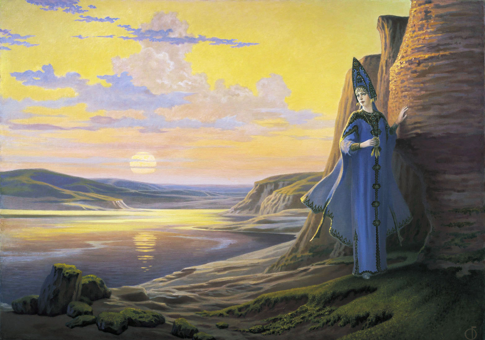
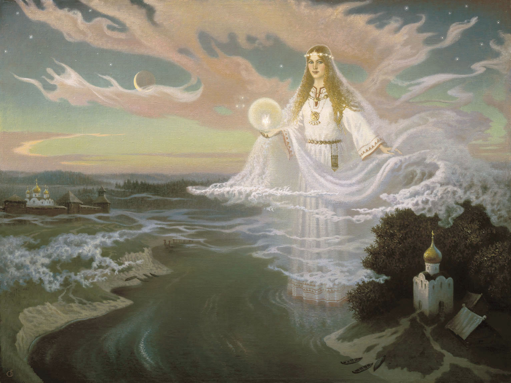
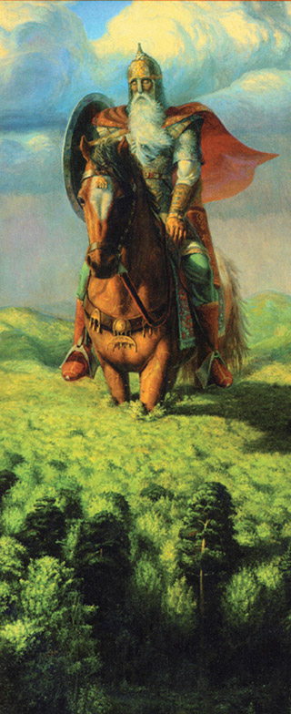
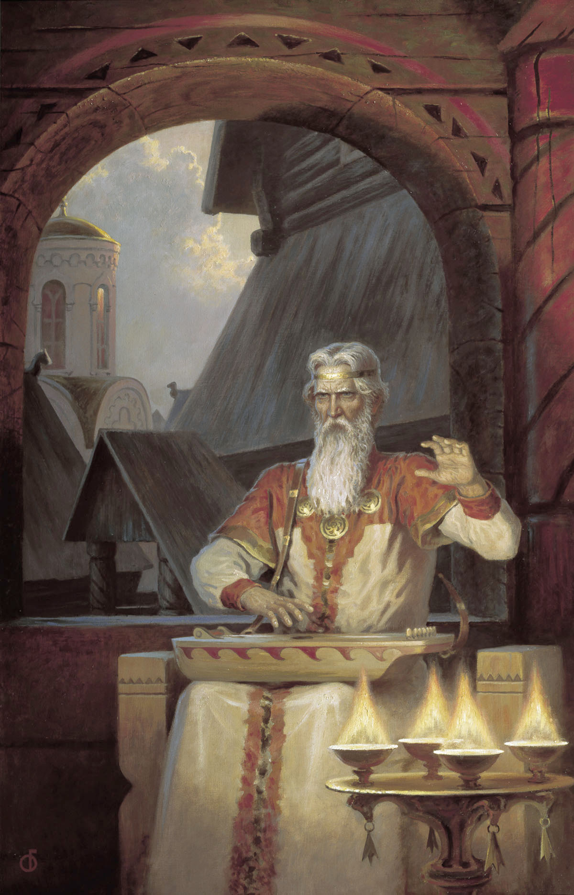
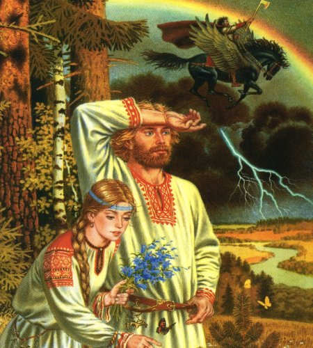

Русь изначальная
Русь изначальная, от войн Ты печальная
Но в вере родной была Ты кристальная!
Себя Ты могучим мечом защищала,
Сынов Ты рожала
И именем светлым их называла.
И дочерей Ты прекрасных растила,
Росой умывала их и поила.
И славился русский народ
От Бога тот Род!
Сварожечей внуки Тебя так любили,
И песни, сказания Тебе возносили.
О славных героях, что былью зовут
Они и теперь вам об этом споют!
Что Русь широка и Богом любима,
В ней рожденная душа Им не забыта.
О, Русь, многолика, Ты и прекрасна,
Добра, и щедра, и нежна не напрасно.
И славишься Ты красотой
И льется душа широтой,
Где вспыхнет Твой образ такой:
Незабудки в глазах,
Ромашки в руках,
Струится лента золотая
В русых косах.
С застенчивым видом,
И с милой улыбкой на добрых устах.
Ступает легонько босою ногою
По шелковой глади травы,
Идет не спеша,
Рубаха бела
И песню запела душа.
Ах, как хороша!
Собою свежа и чиста
И бусы повисли, росинки,
Как будто слезинки,
На солнце играют, блестят,
Хохочут, звенят
И подпевают ей в лад.
Россия сегодня…
Душе Ее больно.
О, люди, довольно,
Вам бить ее по щекам,
Пинать по рукам и ногам.
Уснула в вас вера,
Вы рвете все в клочья,
Проснитесь, ведь скоро Новая эра.
И это миссия России!
Спешите очистить сердца,
России священна земля.
Вам Матушка, Она вас родила.
Откройте в душах вы окно,
Пусть в них засветит луч,
И далеко увидят на планете,
Что вновь в России
Родились Божьи Дети,
Готовые за Мать-Рассеюшку свою,
И за Отца-Творца
Прославить землю русскую.
И вновь чтоб на века Россия обрела
Божественную Силу,
Чтоб каждая душа
Вновь веру укрепила
И в вечности души ее носила.
Дай Бог вам всем любви и мира,
И чтобы вновь Россия
Свою бы мощь и славу проявила
И Именами Родных Богов всех озарила!
сентябрь 1998 г.
Гром Небесный

Гром Небесный,
Могущественный, звон чудесный,
Перун свой голос людям посылает
И от того у многих в душах
Страхи назревают,
Что заповеди Божьи нарушают!
В нем: Глас Небесный
Слышен четко.
В нем: Сила, мощь и красота
И свежестью дождя
Наполнятся сердца.
И радостно становится при мысли
Что это от Великого Отца.
Кто мы такие?
Рабы господ?
Или наследники своих Родных Богов?
Где наш первоисток?
И повернувшись к Солнцу, на восток,
С сияньем северных дорог,
Вдруг разум Высший душу осенит,
Что с Богом нужно жить.
И в громе Глас Его услышав,
Душа будет очень рада,
И встречать Его будет без страха.
И осознаете, как Бог Велик
И все Мира – лишь Он творит!
Прекрасны грозовые тучи,
И радуйтесь всегда дождю,
И как услышите Его вы Голос,
Пусть вздрогнет каждый волос,
Душой, внимая Его речи,
Вы слушайте Его при встрече,
Сам Бог ликует в Небесах!
И все величие творится на Его устах.
10 августа 1997 г.
В гостях у Дедушки Рода
Там где розовый рассвет,
Там где розы вьют букет
Подходили в круг девицы
Побросали рукавицы,
Потому что вновь пришла
Красной нитью заплела
Косу русую – весна!
Где бушуют воды с юга,
С севера воюет вьюга
Две стихии в один час
Встретились, и начали свой рассказ:
«Как давным, совсем давно,
Посмотрев зимой в окно,
Королева укололась об цветок,
И зимой той, в миг уснула
Даже глазом не моргнула,
Как стоит она одна
Видит сон издалека.
Посредине чисто поле
Снег сверкает, вот, раздолье!
Жемчуга, да серебра –
Царство севера, одна,
Побрела на звон она.
Вдруг, увидела избу
- Ну-ка, - думает, зайду!
Постучалася в окошко,
Дверь, открылася немножко,
Мурлыкает тихо тут кошка,
Дед сидит там на печи
Ест там мёд да калачи.
- Здравствуй, дедко,
Королева прошептала,
- Заходи, не робей, да расскажи,
Как ты, здесь, вот очутилась,
Это ж надо, заблудилась?!
Свой рассказ хотела б только рассказать,
Но поведал дед вперёд,
Что имеет честь он всё же знать,
- Кто тропу заветную открыл?
- Дверь могучую, да тайную ей приоткрыл?
- Знаешь, девонька, куда пришла?
Там где Солнце и Луна
Колыбельную Мне песнь поют
И покой Мой звёзды стерегут!
Коль уж добралась до сель
Веды древние ты изучи теперь.
То, ведь книга - то Моя,
Знать пришла сюда не зря!
Ты помощницей Мне будешь,
И во веки не забудешь
Силы той, что дам тебе,
Только удержись в седле!
Выйди на крыльцо светлицы
Видишь конь?
Он для такой девицы,
Той, что любит как заря
Расцветает у окна!
Вот тебе моя награда,
Что встаёшь ты утром рано,
И даруешь всем любовь,
И мечтаешь, чтобы вновь,
Солнце красное вставало
И бутоном расцветало!
Твой цветок тебе я дам
Он заветный, по делам
По - Вселенским, по - мирам
Пропуск всем он пропускам!
Но, смотри, в руке держи,
Дух свой верою стежи!
А теперь, ступай к себе,
И живи ты на Земле,
Как в раю, а не во сне.
Дева низко поклонилась,
В путь-дорогу снарядилась,
На коня же усадилась,
И в поместье очутилась.
А вокруг весна танцует,
И родник Души бушует.
Дева руки к Солнцу подняла
И цветок любви взяла».
Вот закончился рассказ
Кому быль, кому наказ!
12. 05.2008год
Небесная скатерть для русской Души
С чертогов, Богини Макоши небесной
Где всё светло и чисто,
Веретено кружится быстро,
И нитью звёздной с Млечного Пути
В златые, серебро завязывает узелки.
В льняном, небеснооком поле,
В клубок впряду я нить раздолья
В широкую охапку соберу всю волю,
И дам я разгуляться златой Доли!
Наткём мы вместе с Нею полотно
Из всех целебных трав, и чтоб оно
Играло б с Солнцем и Луной
С заветною мечтою родовой.
В переплетенье с нитью золотой
Украсим радужной каймой
В молочном утреннем тумане
Прополоснув, сей полотно в росе
Преподнесем цветы Богине Ладе
И засияет в родовом окладе
Где гладь солярных оберегов
Зарёю вспыхнет над Землёй
Узорье русское в мелодии напевов
Сольются в триединстве тела, духа и душой
Где с шёлком изумрудных трав
Заселим Божий Дух из благородных трав
Достоинств славных и прекрасных
В тех покрывалах неземных атласных
Чарующего силою Любви
Распустится у каждого цветок Души!
28.02. 2010г.
Солнечная память
Солнечный ветер дует в лицо
Как бы догнать судьбы колесо!
Чтоб ветер небесный попутный помог,
Дождь окропит тебя в поле чудес!
Поле, то чудное – русская ширь
Вспомни себя, исполин, богатырь!
Вот ты шагаешь с другом конём
И замечаешь, вдруг, факел с огнём!
Вот он родной светоч с небес
Этот кумир родовой появился и снова исчез!
Вспомни тепло, что любило тебя
И коловрат озарил – столб огня!
Тут ты взошёл на гору Поднебесья
И полилась из души мамина песня…
Вот она сила, вспомни её,
Она родила и хранила тебя!
Род твой Отец, Матерь – Земля
Вскоре вновь будет на небе звезда
Та, что ведёт за собою твой Род
И улыбнётся душа, запоёт!
28.05.2008год
Путь к Родаславию
О, Витязь, ступай Ты с Русскими Богами,
Тогда над родными брегами
Польётся Песнь Души,
Где от щедрот её и широты,
Услышишь зов Вселенской Высоты,
Преданья славной старины…
Из глубины веков
Пусть возродятся Родовые Знанья
Для будущих Путей – Кругов
Пусть торжествуют Веды
И Предков древние сказанья…
Храни, о, Витязь, сие слово,
Победы будут за тобою снова!
2004г. август
Да возрадуется Земля – Матушка
Что просыпается Народ Славный!
Да улыбнутся небеса синие,
Что вспоминает Он Корни родные!
Во зелёной могучей Сибири
С древних лет есть такая обитель
В созерцанье красот хвойной музы
В творении любви расцветают тут души.
Пути перекрёстки здесь у Руси
Под куполом звёзд возродится она,
В объятиях любви родного Народа
Ведрусы споют славу Богам!
2006 год
Вечный союз Небес и Земли
Сознаньем Вед и сказок русских,
Где образ их рождён в Душе,
Что Берегиней чувственной и нежной
Родилась Руна на златом песке.
Она бутон цветка полей чудесных,
Дарует радость в море синих глаз
И обнимает ласково забавой нежной
И к вам придёт ещё не раз!
Цветок её любви –
Он весь прозрачный,
Переливаясь перламутром на огне
Танцует в лилии прекрасной
И отражается в воде!
Под колокольный звон мелодий
В традиции Ведической Руси
Венчает Род Божественный
Дух Небесный с Красавицей - Земли!
Союз супружеский и вечный
Даруют Боги всем тогда,
Когда хранится преданность Первоистоков
И верность уз хранит Душа!
2008 год